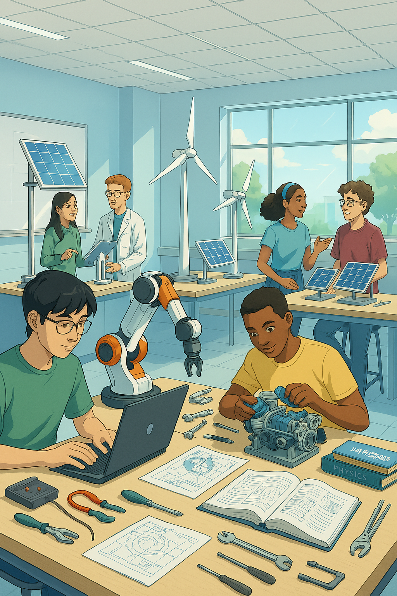

🌍 エネルギー機械コースってどんなところ？
大阪公立大学工業高等専門学校のエネルギー機械コースは、私たちの暮らしに欠かせない「エネルギー」と、社会を支える「機械」の技術を学ぶ場所です。
例えば、スマホや電気自動車を動かす「電気」、部屋を暖かくする「熱」、工場で働くロボットなど、身の回りのあらゆるものがエネルギーと機械の技術で動いています。
このコースでは、地球に優しいエネルギーを作り出す技術や、もっと効率の良い機械を設計・開発する技術など、未来を創り、環境・エネルギーとの共生を実現するための大切な知識とスキルを学びます。
大阪公立大学高専の公式ウェブサイトはこちらで、より詳しい情報が見られます。
💡 具体的に何が学べるの？
エネルギー機械コースでは、以下のようなことを学びます！
- 物理学と数学の基礎: 科学技術の土台となる力をつけます。
- 機械設計・製図: ロボットやエンジンの仕組みを考え、設計図を書く方法を学びます。
- 熱・流体力学: 熱や水の流れ、空気の動きなど、エネルギーがどう伝わるかを学びます。
- エネルギー変換技術: 太陽光、風力、水素など、新しいエネルギーを電気などに変える技術を学びます。
- プログラミング: 機械を動かすためのプログラムを作る基礎を学びます。
- 実験と実習: 実際に機械を分解したり、動かしたりして、理論を体験で理解します。
特に、高専では実験や実習が多く、「実際に手を動かして学ぶ」ことを大切にしています。座学だけでなく、リアルなものづくりを通して深く理解できます。
さらに学びを深めたい方は、コース詳細はこちらをご覧ください。
🚀 卒業したらどんな道に進めるの？
エネルギー機械コースで学んだことは、将来のさまざまな仕事に役立ちます！
- 企業への就職:
- 自動車、航空機メーカー
- 電力会社、エネルギー関連企業
- 機械部品メーカー、重工業
- IT・ロボット関連企業
- 環境関連企業 など
専門的な知識と実践力を持つ高専生は、企業から大変求められています。
- 大学への編入:
高専卒業後、大学の3年生に編入して、さらに高度な専門知識を学ぶこともできます。多くの卒業生が、大阪公立大学をはじめとする国公立大学へ進学しています。
「エネルギー」と「機械」の技術は、これからも社会をより良くしていくために不可欠です。地球環境問題の解決や、新しい技術開発に貢献する人材として活躍できます！
❓ よくある質問
- Q: 機械いじりは得意じゃないとダメですか？
A: 大丈夫です！入学時点での経験は問いません。高専のカリキュラムは基礎から丁寧に学ぶことができるので、少しずつ興味を深めていけます。 - Q: 女子生徒はいますか？
A: はい、もちろんいます。理系女子の活躍は、これからの社会にとってますます重要になっています。安心して学べる環境です。 - Q: どんな資格が取れますか？
A: 在学中に、機械設計技術者試験やエネルギー管理士など、様々な資格取得に挑戦できます。